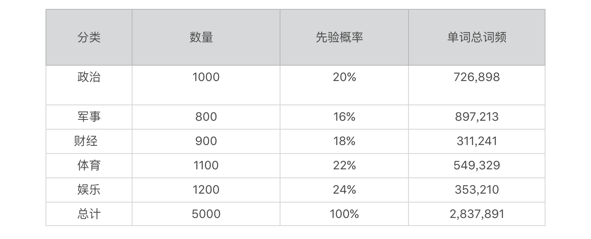
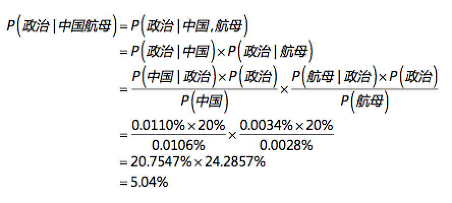
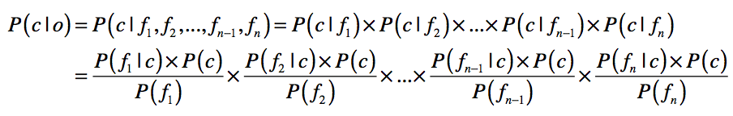

- 01 二进制：不了解计算机的源头，你学什么编程.md
- 02 余数：原来取余操作本身就是个哈希函数.md
- 03 迭代法：不用编程语言的自带函数，你会如何计算平方根？.md
- 04 数学归纳法：如何用数学归纳提升代码的运行效率？.md
- 05 递归（上）：泛化数学归纳，如何将复杂问题简单化？.md
- 06 递归（下）：分而治之，从归并排序到MapReduce.md
- 07 排列：如何让计算机学会“田忌赛马”？.md
- 08 组合：如何让计算机安排世界杯的赛程？.md
- 09 动态规划（上）：如何实现基于编辑距离的查询推荐？.md
- 10 动态规划（下）：如何求得状态转移方程并进行编程实现？.md
- 11 树的深度优先搜索（上）：如何才能高效率地查字典？.md
- 12 树的深度优先搜索（下）：如何才能高效率地查字典？.md
- 13 树的广度优先搜索（上）：人际关系的六度理论是真的吗？.md
- 14 树的广度优先搜索（下）：为什么双向广度优先搜索的效率更高？.md
- 15 从树到图：如何让计算机学会看地图？.md
- 16 时间和空间复杂度（上）：优化性能是否只是“纸上谈兵”？.md
- 17 时间和空间复杂度（下）：如何使用六个法则进行复杂度分析？.md
- 18 总结课：数据结构、编程语句和基础算法体现了哪些数学思想？.md
- 19 概率和统计：编程为什么需要概率和统计？.md
- 20 概率基础（上）：一篇文章帮你理解随机变量、概率分布和期望值.md
- 21 概率基础（下）：联合概率、条件概率和贝叶斯法则，这些概率公式究竟能做什么？.md
- 22 朴素贝叶斯：如何让计算机学会自动分类？.md
- 23 文本分类：如何区分特定类型的新闻？.md
- 24 语言模型：如何使用链式法则和马尔科夫假设简化概率模型？.md
- 25 马尔科夫模型：从PageRank到语音识别，背后是什么模型在支撑？.md
- 26 信息熵：如何通过几个问题，测出你对应的武侠人物？.md
- 27 决策树：信息增益、增益比率和基尼指数的运用.md
- 28 熵、信息增益和卡方：如何寻找关键特征？.md
- 29 归一化和标准化：各种特征如何综合才是最合理的？.md
- 30 统计意义（上）：如何通过显著性检验，判断你的A_B测试结果是不是巧合？.md
- 31 统计意义（下）：如何通过显著性检验，判断你的A_B测试结果是不是巧合？.md
- 32 概率统计篇答疑和总结：为什么会有欠拟合和过拟合？.md
- 33 线性代数：线性代数到底都讲了些什么？.md
- 34 向量空间模型：如何让计算机理解现实事物之间的关系？.md
- 35 文本检索：如何让计算机处理自然语言？.md
- 36 文本聚类：如何过滤冗余的新闻？.md
- 37 矩阵（上）：如何使用矩阵操作进行PageRank计算？.md
- 38 矩阵（下）：如何使用矩阵操作进行协同过滤推荐？.md
- 39 线性回归（上）：如何使用高斯消元求解线性方程组？.md
- 40 线性回归（中）：如何使用最小二乘法进行直线拟合？.md
- 41 线性回归（下）：如何使用最小二乘法进行效果验证？.md
- 42 PCA主成分分析（上）：如何利用协方差矩阵来降维？.md
- 43 PCA主成分分析（下）：为什么要计算协方差矩阵的特征值和特征向量？.md
- 44 奇异值分解：如何挖掘潜在的语义关系？.md
- 45 线性代数篇答疑和总结：矩阵乘法的几何意义是什么？.md
- 46 缓存系统：如何通过哈希表和队列实现高效访问？.md
- 47 搜索引擎（上）：如何通过倒排索引和向量空间模型，打造一个简单的搜索引擎？.md
- 48 搜索引擎（下）：如何通过查询的分类，让电商平台的搜索结果更相关？.md
- 49 推荐系统（上）：如何实现基于相似度的协同过滤？.md
- 50 推荐系统（下）：如何通过SVD分析用户和物品的矩阵？.md
- 51 综合应用篇答疑和总结：如何进行个性化用户画像的设计？.md
- 导读：程序员应该怎么学数学？.md
- 开篇词 作为程序员，为什么你应该学好数学？.md
- 数学专栏课外加餐（一） 我们为什么需要反码和补码？.md
- 数学专栏课外加餐（三）：程序员需要读哪些数学书？.md
- 数学专栏课外加餐（二） 位操作的三个应用实例.md
- 结束语 从数学到编程，本身就是一个很长的链条.md
23 文本分类：如何区分特定类型的新闻？
你好，我是黄申。
你平时应该见过手机App推送的新闻吧？你有没有觉得这些App的推荐算法很神奇？它们竟然可以根据你的喜好来推荐新闻。想要实现这些推荐算法，有一个非常重要的步骤就是给新闻分类。可是，新闻头条这种综合性的平台，需要处理的新闻都是海量的，我们不可能完全靠人工手动处理这些事情。这个时候，我们就要用到计算机技术，来对文本进行自动分类。
上一节，我给你介绍了如何利用朴素贝叶斯方法，教会计算机进行最基本的水果分类。基于水果分类，今天我们继续深入分类这个话题，告诉你如何利用自然语言处理和朴素贝叶斯方法，对新闻这种长篇文本进行分类。
文本分类系统的基本框架
想要实现一个完整的文本分类系统，我们通常需要进行这些步骤：
1.采集训练样本
对于每个数据对象，我们必须告诉计算机，它属于哪个分类。上一节的水果案例里，我们给每个水果打上“苹果”“甜橙”和“西瓜”的标签，这就是采集训练样本。
同样，我们可以给每一篇新闻打上标签，也就是说，我们首先要分辨某条新闻是什么类型的，比如是政治的、军事的、财经的、体育的，还是娱乐的等等。这一点非常关键，因为分类标签就相当于计算机所要学习的标准答案，其质量高低直接决定了计算机的分类效果。此外，我们也可以在一开始就预留一些训练样本，专门用于测试分类的效果。
2.预处理自然语言
在水果的案例中，当我们把这些水果的特征值提取出来后，能很容易地将它们的属性转化成计算机所能处理的数据，可是这一步对于文本而言就没有那么容易了。好在专家们已经发明出了一套相对成熟的方法，包括词包（bag of words）、分词、词干（Stemming）和归一化（Normalization）、停用词（Stopword）、同义词（Synonyms）和扩展词处理。这里你只需要了解有这么些方法就可以了，我们使用这些方法的目的就是让计算机能够理解文本，所以如果你对刚才提到的这些专业词汇比较陌生，完全不用担心，这并不会影响对后面知识的理解。
3.训练模型
训练模型就是算法通过训练数据进行模型拟合的过程。对于朴素贝叶斯方法而言，训练的过程就是要获取每个分类的先验概率、每个属性的先验概率以及给定某个分类时，出现某个属性的条件概率。
4.实时分类预测
算法模型在训练完毕后，根据新数据的属性来预测它属于哪个分类的过程。对于朴素贝叶斯方法而言，分类预测的过程就是根据训练阶段所获得的先验概率和条件概率，来预估给定一系列属性的情况下属于某个分类的后验概率。
整个流程大致可以用下图来描述：
这四个步骤你大致了解就可以了，这里面有两点我会重点讲一下，一是对文本中的自然语言进行预处理，并从文本集合建立字典；另一个是如何使用建好的字典，统计朴素贝叶斯方法所需的数据。自然语言的预处理是让计算机“理解”人类语言的关键步骤，如果没有这一步，计算机就无法将大量的自然语言转换成自己可以处理的数据。而条件概率和先验概率是朴素贝叶斯方法所必需的，因此如何准确地统计它们也是需要详细解释的。
基于自然语言的预处理
和之前的水果案例相比，新闻这种文本数据最大的区别在于，它包含了大量的自然语言。那么如何让计算机理解自然语言呢？我们的计算机体系没有思维，要理解人类的语言在现阶段是不现实的。但是，我们仍然可以对自然语言进行适当的处理，将其变为机器所能处理的数据。
首先，我们要知道，文本的重要属性是什么，这样我们才能提取出它的特征。怎么才能知道哪些属性是重要的呢？
我举个例子，假如说，有人给你一篇几千字的文章，让你在10秒钟之内说出文章大意，你会怎么办？我想大部分人的解决方案是“找关键词”！没错，我们也可以教给计算机同样的办法。而计算机处理文本的基本单位就是字和单词，这就是人们最常用的方法：词袋（Bag of words）模型。
这种模型会忽略文本中的词语出现的顺序以及相应的语法，将整篇文章仅仅看作是一个大量单词的组合。文本中每个词的出现都是独立的，不依赖于其他词的出现情况。讲到这里，你有没有发现在词包模型中，所有单词相互之间是独立的，这个假设和朴素贝叶斯模型的独立假设是不是一致呀？
没错！这里我们就可以很巧妙地将朴素贝叶斯和文本处理结合起来了。不过先不要急，我们还要掌握一些方法，才能将文本中的长篇大论处理成关键词。
1.分词
计算机处理自然语言的基本单位是单词和词组。对于英语等拉丁语系的语言来说，单词之间是以空格作为自然分界符的，所以我们可以直接使用空格对句子进行分割，然后来获取每个单词。但是，中文、日文、韩文这些语言在书写的时候，词和词之间并没有空格可以进行自然分界，所以我们就需要使用一些算法，来估计词语之间的划分，我们将这个过程称为分词。
这里有一个给中文句子分词的例子，你可以看一看。
分词前：今天我们一起来学习计算机学科中的数学知识
分词后：今天 我们 一起 来 学习 计算机 学科 中 的 数学 知识
是不是觉得给句子分词很简单？这是因为你的中文水平比较高，你想想，计算机怎么才能知道如何分词呢？我们有很多现成的分词模型可以使用。我这里介绍两种目前比较主流的分词模型，你只需要了解就行。
第一种是基于字符串匹配。其实就是扫描字符串。如果发现字符串的子串和词相同，就算匹配成功。匹配规则通常是“正向最大匹配”“逆向最大匹配”“长词优先”。这些算法的优点是只需使用基于字典的匹配，因此计算复杂度低；缺点是处理歧义词效果不佳。
第二种是基于统计和机器学习。这类分词基于人工标注的词性和统计特征，对中文进行建模。训练阶段，根据标注好的语料对模型参数进行估计。在分词阶段再通过模型计算各种分词出现的概率，将概率最大的分词作为最终结果。常见的序列标注模型有隐马尔科夫模型（HMM，Hidden Markov Model）和条件随机场（CRF，Conditional Random Field），我们后面章节会讲到，这里我先不展开。
2.取词干和归一化
我们刚才说了，相对中文而言，英文完全不需要考虑分词。不过它也有中文不具有的单复数、各种时态，因此它需要考虑取词干（stemming）。取词干的目标就是为了减少词的变化形式，将派生词转化为基本形式，就像下面这样：
将am，is，are，was，were全部转换为be
将car，cars，car’s，cars’全部转换为car
最后，我们还要考虑大小写转化和多种拼写（例如color和colour）这样的统一化，我们把这种做法称为归一化。
3.停用词
无论何种语言，都会存在一些不影响（或基本不影响）相关性的词。有的时候干脆可以指定一个叫停用词（stop word）的字典，直接将这些词过滤，不予以考虑。例如英文中的a、an、the、that、is、good、bad等。中文“的、个、你、我、他、好、坏”等。
如此一来，我们可以在基本不损失语义的情况下，减少数据文件的大小，提高计算机处理的效率。当然，也要注意停用词的使用场景，例如用户观点分析，good和bad这样的形容词反而成为了关键。不仅不能过滤，反而要加大它们的权重。
4.同义词和扩展词
不同的地域或者不同时代，会导致人们对于同样的物品叫法也不同。例如，在中国北方“番茄”应该叫“西红柿”，而台湾地区将“菠萝”称为“凤梨”。对于计算机而言，需要意识到这两个词是等价的。添加同义词就是一个很好的手段。我们可以维护如下一个同义词的词典：
番茄，西红柿
菠萝，凤梨
洋山芋，土豆
泡面，方便面，速食面，快餐面
山芋，红薯
鼠标，滑鼠
……
有了这样的词典，当看到文本中出现“番茄”关键词的时候，计算机系统就会将其等同于“西红柿”这个词。有的时候我们还需要扩展词。如果简单地将Dove分别和多芬、德芙简单地等价，那么多芬和德芙这两个完全不同的品牌也变成了同义词，这样做明显是有问题的。那么我们可以采用扩展关系，当系统看到文本中的“多芬”时将其等同于“Dove”，看到“德芙”时将其等同于“Dove”。但是看到“Dove”的时候并不将其等同于“多芬”或“德芙”。
通过词包模型的假设，以及上述这些自然语言处理的方法，我们可以将整篇的文字，切分为一个个的单词，这些是表示文章的关键属性。你不难发现，每个单词可以作为文章的属性，而通过这些单词的词频（出现的频率），我们很容易进行概率的统计。下面我对分类的先验概率、单词的先验概率、某个分类下某个单词的条件概率分别给出了示例。



在上表中，你会发现某些单词从未在某个分类中出现，例如“航母”这个词从未在“体育”和“娱乐”这两个分类中出现。对于这种情况，我们可以使用平滑（smoothing）的技术，将其词频或条件概率设置为一个极小的值。这里，我设置了最小的词频，也就是1。
有了这些单词属性以及相应的概率统计，下一步就是如何使用朴素贝叶斯模型进行文本的分类了。
运用朴素贝叶斯模型
首先我们先来回顾下，上一节推导的朴素贝叶斯公式。

在新闻分类中，o就表示一篇文章，而c表示新闻的种类（包括政治、军事、财经等等）。而属性字段f就是我们从文档集而建立的各种单词。公式等号左边的P(c|f)就是待分类新闻中，出现单词f时，该新闻属于类别c的概率。而等号右边的P(f|c)是根据训练数据统计，得到分类c中出现单词f的概率。P( c )是分类c在新闻训练数据中出现的概率，P(f)是单词f在训练样本中出现的概率。
我们用刚才表格中的数据来计算下“中国航母”这个短语属于每个分类的概率。



可以看出来，“中国航母”这个短语本身属于“政治”和“军事”分类的可能性最高，而属于“财经”的可能性最低。需要注意的是，我在上述公式使用了中文词便于你的理解，在真正的实现中，我们需要将中文词和中文分类名称转换为数字型的ID，以提高系统的效率。
当然，一篇文章所包含的不同的单词数量要远远大于2个，之前如果我们只看“中国航母”这个短语，那么它属于“政治”和“军事”的概率基本一致。如果我们考虑更长的文章（也就是更多的单词），那么这个情况也许就会发生变化。为了支持更多的单词，我们将上述公式扩展为：

这里需要注意一个很实际的问题：文章的篇幅很长，常常会导致非常多的P(f|c)连续乘积。而P(f|c)通常是非常小的数值，因此最后的乘积将快速趋近于0以至于计算机无法识别。这里可以使用我们之前提到的一些数学手法进行转换，比如取log，将小数转换为绝对值大于1的负数。这样的转换，虽然会改变每篇文章属于每个分类的概率的绝对值，但是并不会改变这些概率的相对大小。
总结
在这一讲中，我讲了一个文本分类系统的几个关键步骤，其中最重要的是自然语言的处理和分类模型的训练和预测。
自然语言的处理是关键的预处理步骤，它将文本转换成计算机所能处理的数据。常见方法包括中文分词，英文的取词干和归一化，还有适用于各种语言的停用词、同义词和扩展词等。如果不考虑这些词出现的先后顺序，以及表达的深层次语义，那么我们就可以使用词包的方法，将大段的文章和语句转化成单词所组成的集合。之后，我们就能统计每个单词属于每个分类的条件概率，以及分类和单词的先验概率。
一旦将文章表示为单词的集合，我们就会发现，朴素贝叶斯的模型非常适合文章的分类。因为所有单词出现的词频都是离散值，非常适合统计概率。此外，许多新闻之类的文章本身也是跨了多个领域，因此有可能属于多个分类，朴素贝叶斯也能支持这点。我们针对“中国航母”这个短语进行了测试，发现其属于“政治”和“军事”分类的可能性最高。不过要注意的是，文章可能包含非常多的单词，朴素贝叶斯模型中的连续乘积会导致过小的值，甚至计算机都无法处理。为了避免这种情况，我们可以使用log的数学变换。
思考题
你也许已经通过“中国航母”这个简单的例子，见识到了计算机自动分类的神奇功效。使用同样的分类模型和概率分布，你能否计算一下“美国电影”属于政治、军事、财经、体育和娱乐分类的概率，分别是多少？
欢迎留言和我分享，也欢迎你在留言区写下今天的学习笔记。你可以点击“请朋友读”，把今天的内容分享给你的好友，和他一起精进。
© 2019 - 2023 Liangliang Lee. Powered by gin and hexo-theme-book.